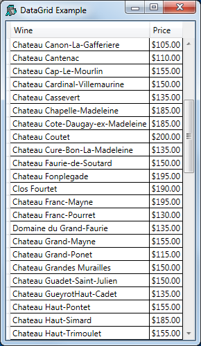

This example illustrates data binding using a vector of namespaces .
Each row in the WPF DataGrid control is represented by an object, and each column as a property of that object. Each row in the DataGrid is bound to an object in the data source, and each column in the data grid is bound to a property of the data object.
The XAML shown below, describes a Window containing a DockPanel, inside which is a DataGrid.
<Window
xmlns="http://schemas.microsoft.com/winfx/2006/xaml/presentation"
xmlns:x="http://schemas.microsoft.com/winfx/2006/xaml"
Title="DataGrid Example" Height="500"
SizeToContent="Width"
Topmost="true">
<DockPanel>
<DataGrid Name="DG1" ItemsSource="{Binding}"
AutoGenerateColumns="False" >
<DataGrid.Columns>
<DataGridTextColumn Header="Wine"
Binding="{Binding Name}"/>
<DataGridTextColumn Header="Price"
Binding="{Binding Price, StringFormat=C}" />
</DataGrid.Columns>
</DataGrid>
</DockPanel>
</Window>
The phrase ItemsSource="{Binding}" states that the content of the DataGrid is bound to a data source, which in this case will be inherited from the DataContext property of the parent Window.
Binding="{Binding Name}" specifies that the contents of the first column are bound to a Path named Name in the data source.
Similarly, Binding="{Binding Price, StringFormat=C}" specifies that the Path for the second column is Price (StringFormat=C merely specifies the default currency format).
The function Grid is shown below.
∇ Grid;⎕USING;MySource;win
[1] ⎕USING←'System'
[2] winelist←⎕NS¨(⍴Wines)⍴⊂''
[3] winelist.Name←Wines
[4] winelist.Price←0.01×10000+?(⍴Wines)⍴10000
[5]
[6] win←LoadXAML XAML
[7] win.DataContext←2015⌶'winelist'
[8] win.Show
∇
The global variable Wines contains a vector of character vectors, each of which is the name of a wine. Grid[2-4] creates winelist, a vector of namespaces, of the same length, each of which contains two variables c Name and Price.
)LOAD WPFIntro
)CS DataBinding.DataGrid
GridLet's round the prices to the nearest $5.
winelist.Price←5×⌊0.5+winelist.Price÷5
